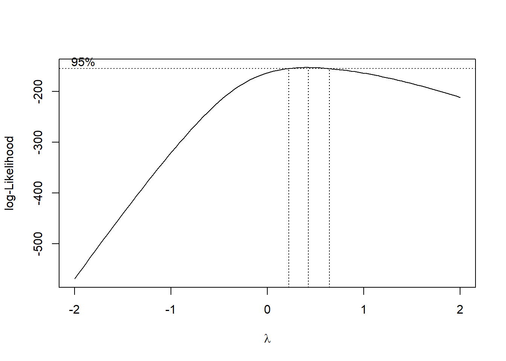
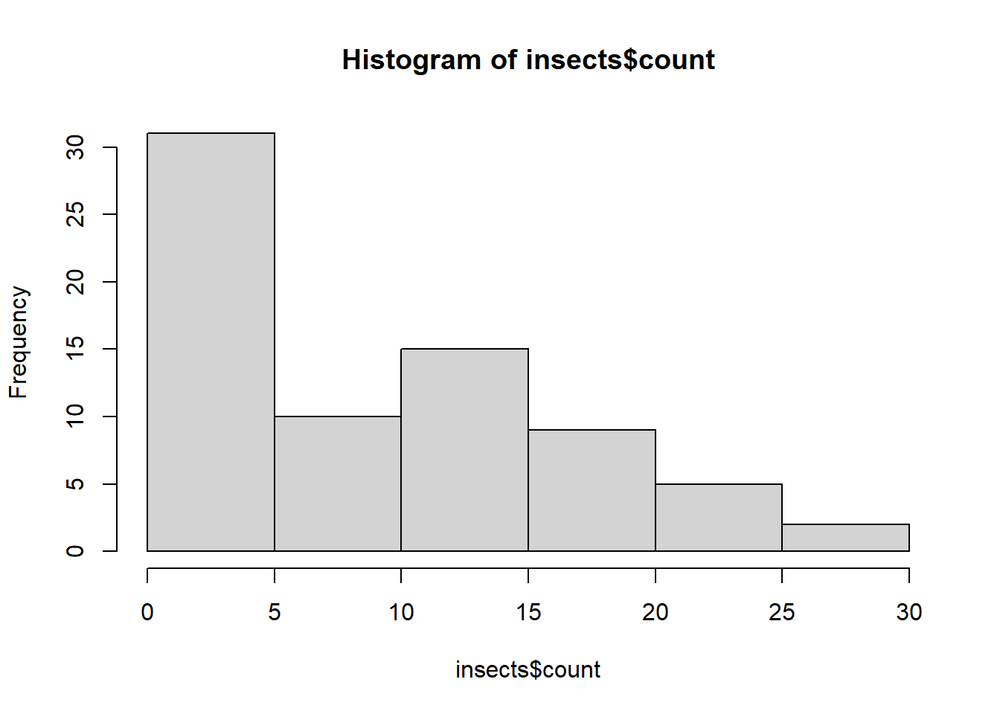

library(readxl)
library(tidyverse)
micelial <- read_excel("dados-diversos.xlsx", "fungicida_vaso")
micelial <- micelial |>
mutate(inc = inf_seeds/n_seeds*100,
rank_inc = rank(inc))
# rank transforma dados quando tem-se dois fatores. rank transforma a variável resposta para dois fatores
rank_anova <- aov(rank_inc ~ treat*dose, data = micelial)
summary(rank_anova) Df Sum Sq Mean Sq F value Pr(>F)
treat 1 220.00 220.00 14.204 0.00168 **
dose 1 105.34 105.34 6.801 0.01904 *
treat:dose 1 80.34 80.34 5.187 0.03684 *
Residuals 16 247.82 15.49
---
Signif. codes: 0 '***' 0.001 '**' 0.01 '*' 0.05 '.' 0.1 ' ' 1library(emmeans)
means_rank <- emmeans(rank_anova, ~ treat | dose)
library(multcomp)
library(multcompView)
cld(means_rank)dose = 0.5:
treat emmean SE df lower.CL upper.CL .group
Tebuconazole 6.90 1.76 16 3.17 10.6 1
Ionic liquid 18.00 1.76 16 14.27 21.7 2
dose = 2.0:
treat emmean SE df lower.CL upper.CL .group
Tebuconazole 6.75 1.97 16 2.58 10.9 1
Ionic liquid 9.75 1.61 16 6.34 13.2 1
Confidence level used: 0.95
significance level used: alpha = 0.05
NOTE: If two or more means share the same grouping symbol,
then we cannot show them to be different.
But we also did not show them to be the same. # usar boxcox
library(MASS)
# criando o objeto insects
insects <- tibble::as_tibble(InsectSprays)|>
dplyr::select(spray, count)
insects# A tibble: 72 × 2
spray count
<fct> <dbl>
1 A 10
2 A 7
3 A 20
4 A 14
5 A 14
6 A 12
7 A 10
8 A 23
9 A 17
10 A 20
# ℹ 62 more rowsb <- boxcox(lm(insects$count+0.1 ~ 1)) # o valor 0.1 é pq tinha zero nos dados; insects$count é a variável resposta 
# Encontra o lambda
lambda <- b$x[which.max(b$y)]
lambda[1] 0.4242424# Após achar o lambda, a variável resposta é transformada com a fórmula abaixo
insects$count2 <- (insects$count ^ lambda - 1) / lambda # insects$count2 cria count2 automaticamente, o lambda transformado
insects$count2 # variável resposta transformada [1] 3.903635 3.024469 6.043993 4.864268 4.864268 4.407118 3.903635
[8] 6.557185 5.484274 6.043993 4.864268 4.640760 4.161975 5.484274
[15] 6.219699 4.161975 5.285168 4.864268 5.484274 5.484274 5.863153
[22] 6.219699 3.024469 4.640760 -2.357143 0.000000 3.024469 0.805831
[29] 1.399509 0.000000 0.805831 0.000000 1.399509 -2.357143 0.000000
[36] 1.887150 1.399509 2.308577 4.407118 2.683787 1.887150 1.399509
[43] 2.308577 2.308577 2.308577 2.308577 0.805831 1.887150 1.399509
[50] 2.308577 1.399509 2.308577 1.399509 2.683787 0.000000 0.000000
[57] 1.399509 0.805831 2.683787 1.887150 4.161975 3.629951 5.078760
[64] 6.390651 5.078760 5.285168 4.640760 3.903635 7.033117 7.033117
[71] 6.719601 4.640760hist(insects$count) # muito assimétrico
hist(insects$count2) # mais simétrico
insects$count2 [1] 3.903635 3.024469 6.043993 4.864268 4.864268 4.407118 3.903635
[8] 6.557185 5.484274 6.043993 4.864268 4.640760 4.161975 5.484274
[15] 6.219699 4.161975 5.285168 4.864268 5.484274 5.484274 5.863153
[22] 6.219699 3.024469 4.640760 -2.357143 0.000000 3.024469 0.805831
[29] 1.399509 0.000000 0.805831 0.000000 1.399509 -2.357143 0.000000
[36] 1.887150 1.399509 2.308577 4.407118 2.683787 1.887150 1.399509
[43] 2.308577 2.308577 2.308577 2.308577 0.805831 1.887150 1.399509
[50] 2.308577 1.399509 2.308577 1.399509 2.683787 0.000000 0.000000
[57] 1.399509 0.805831 2.683787 1.887150 4.161975 3.629951 5.078760
[64] 6.390651 5.078760 5.285168 4.640760 3.903635 7.033117 7.033117
[71] 6.719601 4.640760